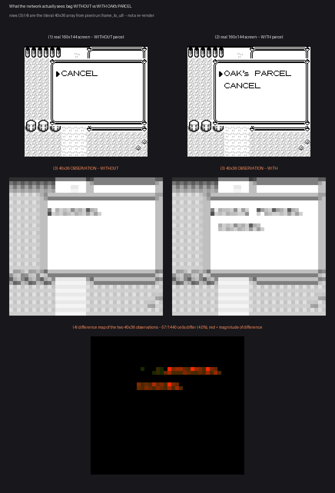
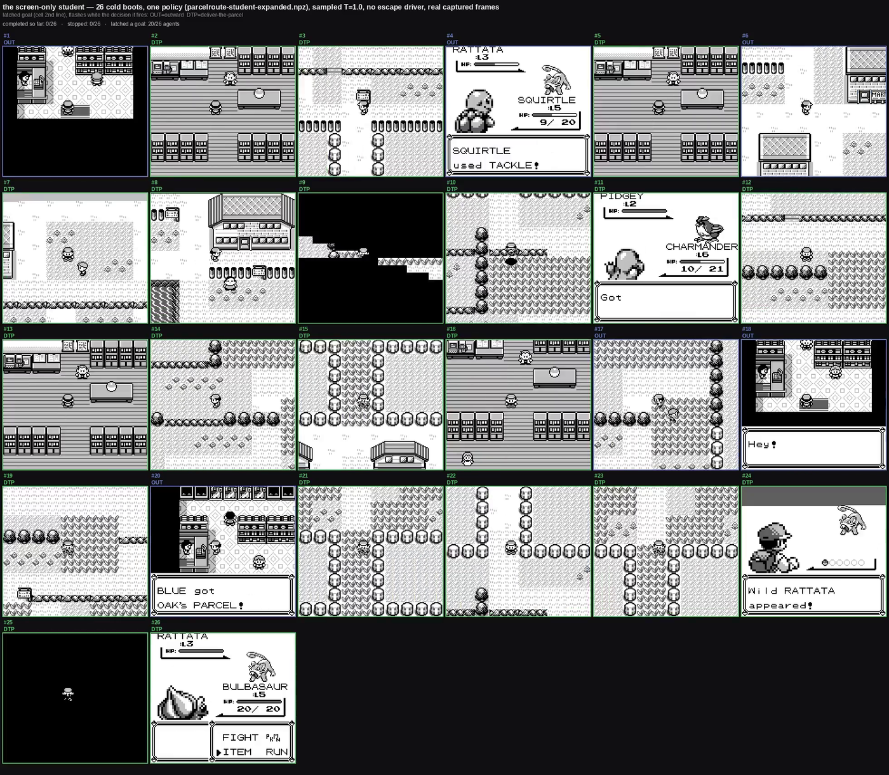
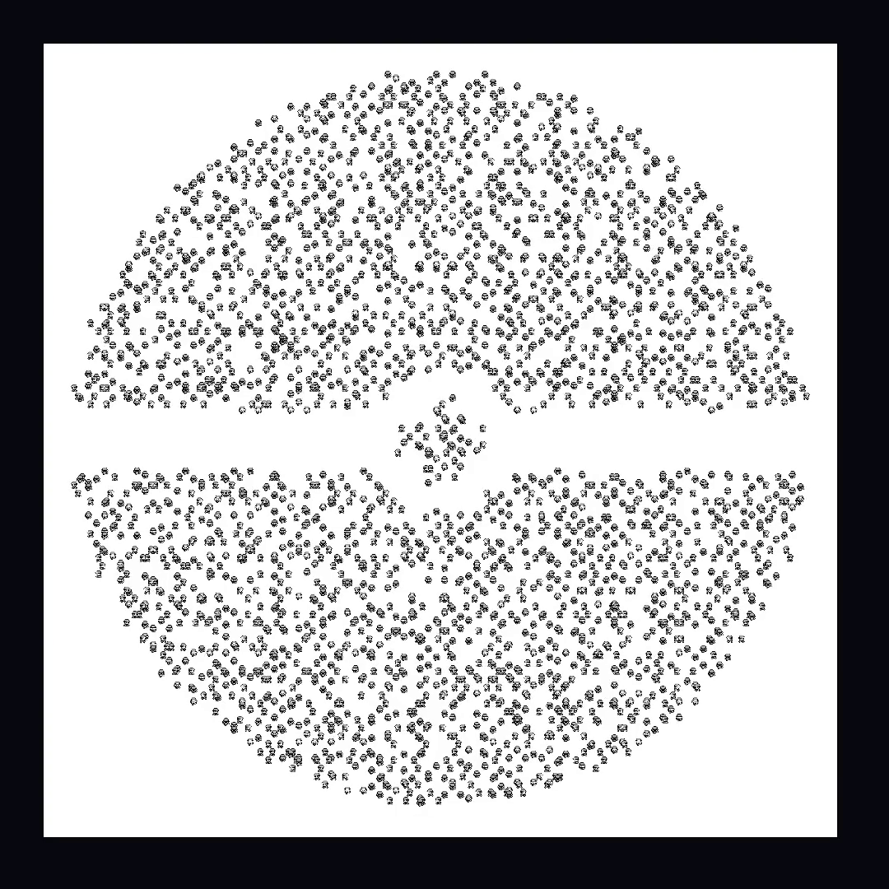

Project · Machine learning
AgentGB
A small local network that plays Pokémon Blue from the screen and nothing else. A picture goes in, a button comes out, on any emulator, at no inference cost worth measuring. From a cold boot it runs the whole opening loop — bedroom to the Pokédex, out to deliver Oak's parcel, back for it a second time, and out again with Poké Balls in hand. Twenty-one links, six hundred cold boots out of six hundred. Everything below the scores — the training pipeline, the certification harness, the tooling — is built to be pointed at a different cartridge, which is the actual point of writing it up.
models/pixel-student.npz, policy sha256 b2bb79082c88…,
emulator 1c7a78398b76…, ROM 2a951313c264…. Sampled at
temperature 1.0, not argmax — argmax takes the same starter every time; sampling is
what produces a real distribution. Record:
pixel-chainchamberedheal-n600-floor092-LANDING.json, seed 42, N=600. A
rate on this page always names the weights and the record it belongs to.
What it does
The player
Screen in, button out
- Input is four stacked 40×36 frames at four ink levels — no coordinates, no map id, no memory read of any kind
- Output is one of six buttons
- Goal-conditioned: the network derives which part of the chain it is in rather than being told
- Exports to ONNX and runs through foreign runtimes
How it is trained
A teacher, a corpus, a student
- A scripted teacher reads the cartridge's memory and walks a shortest path — no network is asked to rediscover pathfinding
- It writes a corpus: one screen, one button, per decision. No weights pass through it
- The student is trained on that corpus by behavioural cloning, then DAgger rounds. A quarter of the collection is a random driver, because a competent teacher never produces the picture of facing a wall
- Fixes since the star pupil are adapters that nudge a frozen base, proven byte-identical before and after — more below
How it is judged
The cartridge keeps the score
- Success is a byte the cartridge writes, read out of the machine at the moment a goal is claimed, with host-enforced no-memory-writes so nothing the policy does can make that byte lie
- Every attempt carries a fixed decision budget; running out counts as a failure, no partial credit
- Certification runs 3,000 attempts a link; the whole-chain figure on this page is a 600-run cold-boot certification, not the per-link scale
- Every rate is reported per starter as well as in aggregate
Where it runs
Not just our emulator
- The committed weights drive the eleven-link opening on mGBA's libretro core from a genuine cold power-on — every matrix multiply through a foreign runtime
- Fan-out certification across sixteen workers at once
- A swarm view: many emulated Game Boys at once, each at its own world position
Method — the part that transfers to another game
This is the section that matters if the plan is to point this at a different cartridge. None of it is specific to Pokémon.
Ground truth
Certify on a memory milestone, never a picture
Every link's goal is a cartridge value — $D35E == 37, not "does
this look right". A picture is what the student acts on; it never gets to
grade itself.
Recognisers
Ask what just happened, not where you are
Two false-fire bugs on 2026-08-31 were exactly that mistake: one decided a street tile was a shop at 0.647 confidence, one fired on a shop menu. A recogniser that answers "where am I" is answering the wrong question.
Recognisers
Restrict what a recogniser can see
crop_region is a hard structural limit, not a hope that a
balanced corpus makes the network ignore the rest of the screen. A declared
region beats hard negatives, because exclusion is free and training is not.
Measurement
One variable per measurement
Every wrong number recorded on 2026-08-31 came from changing two things at once.
Measurement
Measured negatives are kept, not deleted
Cropping a recogniser to just the POKé/MART sign scored 77.7% against the wider crop's 79.6%. The pixel observation was fine; the classifier win wasn't there. That result is documented, not binned.
Build hygiene
Artefacts must be committed, and a guard enforces it
A chain was once certified, reported and merged while four of the weight
files it depended on existed only in a scratch folder.
tools/test_studentconfig_guards.py test 10 now fails the build
if any registered goal points at an untracked path.
Tooling
Tools must not have silent foot-guns
pixelchainfilm ran happily without --every-frame,
produced a valid file, and silently yielded a teleporting film. It's now the
default, with an explicit opt-out instead of a silent one.
The tooling someone else would use
What ships in the repository, not a description of it.
| Command | What it does |
|---|---|
agentgb pixelchain | Runs the student over the chain, N runs, reports per-link rates |
agentgb pixelchainfilm | N agents side by side, each on its own screen |
agentgb pixelmapfilm | The same swarm on one composed map, follow camera |
agentgb pixelprofile | Where the time actually goes: student vs. emulator |
agentgb studentconfig compare|promote | The certification gate — nothing ships without it |
tools/train_adapters.py | Trains a frozen-base adapter for a new goal |
TerminalGB | The emulator underneath: --speed uncapped|realtime|Nx, --audio, --video-out |
None of these are wrappers built for this page. They're the same commands the chain above was certified with.
What gets recorded, and what doesn't
Emulator instances step through real button presses against a real ROM, headless, and nothing about a run is staged afterwards. What a swarm film draws comes from one line an agent writes every decision — map, position, facing, which link, in battle or not — the instant that decision happens. A film doesn't re-simulate anything and doesn't stand a screenshot in for a run that didn't happen: the renderer draws characters at exactly the positions already on file, and that file is the output of a real playthrough, not the input to a synthetic one.
The score works the same way. Success is a byte the cartridge itself writes when a goal is actually claimed, read back out of the machine at that moment, with host-enforced no-memory-writes standing between the policy and any byte it might otherwise be tempted to fake.
The trick, and the honest version of it
None of this is affordable at real time. Every episode starts by loading a save state — about 142 KB, the whole state of the machine — which is free: deserialised and running again in under a millisecond. Headless, with the picture turned off for the paths that don't need it, one instance steps at roughly 70 times real time; fanned out across sixteen at once on one box, that measures at 31,485 frames a second. Every one of those instances is provably deterministic — this project's own emulator produces byte-identical framebuffers and save-state snapshots across four processor architectures, with a recorded match on a PSP build besides.
Save-state scripting itself is not new, and it isn't the claim here. BizHawk and PyBoy both drive an emulator this way, and PyBoy is the established Python Game Boy emulator for exactly this kind of work — it's what a 50,000-hour reinforcement learning run against this same game used, and PyBoy's own documentation states a real speed ceiling above 5×. What's specific to this project isn't the trick. It's the stack underneath it: an emulator built and pinned to a specific commit and hash rather than borrowed, a memory atlas of the cartridge as ground truth instead of a guess, and a self-test cartridge built to catch the emulator lying about hardware behaviour before any agent is trained against it.
Current scores
All of these belong to models/pixel-student.npz, sampled at
temperature 1.0.
| What was run | N | Result |
|---|---|---|
| Whole 21-link chain, cold boot to Poké Balls in hand | 600 | 600 (100%) |
| — of those, self-healing detour mid-chain, at no cost to the chain | 600 | 306 (51.0%) |
| Starter chosen — BULBASAUR | 600 | 389 (64.8%) |
| Starter chosen — SQUIRTLE | 600 | 184 (30.7%) |
| Starter chosen — CHARMANDER | 600 | 27 (4.5%) |
The starter is the student's own choice, read back off the cartridge by the harness; the network never sees which one it took. It's sampled, not forced — argmax takes Bulbasaur every time, which is why the distribution above exists at all.
The twenty-one links
This is the actual decomposition, not a description of one — each entry below is a single cartridge condition, checked, nothing more:
leave-the-bedroom → leave-the-house →
trigger-oak-in-the-grass → follow-oak-to-the-lab →
take-a-starter → battle-the-rival →
out-of-the-lab → north-out-of-pallet →
cross-route-1 → into-the-viridian-mart →
collect-oaks-parcel → out-of-the-mart →
south-out-of-viridian → back-down-route-1 →
into-oaks-lab → receive-the-pokedex →
out-of-the-lab-again → north-out-of-pallet-again →
cross-route-1-again → into-the-viridian-mart-again →
buy-pokeballs
The last three links are new since the chain last certified at eighteen: cross Route 1 a second time, back into the Viridian mart, buy the balls. The chain ends there — it does not yet reach Pewter, and it has not fought Brock.
Staying alive: not getting stuck, and healing when it doesn't need to ask
A chain scoring 594 of 600 looks like several small problems spread thin. It wasn't. Three separate 600-run sweeps produced fourteen failures between them, and every one ended the same way: twelve identical actions in a row, the same button, until the run ran out of decisions. The cause was the confidence gate itself — above 0.80 confidence the policy takes the argmax rather than sampling, and a no-op on a screen that can't change produces the exact same input on the next decision, so the same output, forever. Confidence in the wrong button doesn't wobble once it's locked; nothing about a static screen can unlock it.
The fix doesn't ban the action. It subtracts a flat amount from the repeated action's
logit every time it fires without changing the frame — nothing else on the board
moves. Subtracting D from a logit divides that action's odds against every
alternative by e-D per repeat: exponential decay of belief, the
exact mirror of an exponential backoff, arrived at from the opposite direction. Enough
repeats and the action that looked certain stops being the argmax, sampling reopens,
and the agent moves on. Result: 594 of 600 to 600 of 600, and the
stuck_in_battle failure mode specifically went from 4 occurrences to 0.
The same day, the same underlying machinery — noticing a condition without being told to check it constantly — became chambered goals: two conditions decoupled in time. An arm condition read from cartridge memory (the agent has taken damage) and a fire condition read from the screen, checked only once armed (a Pokémon Center is in view). Take damage, the chamber loads; later, a Center comes into view, it fires — heal, walk out, resume whatever the chain was already doing. A blackout heals the party too, so it discharges the chamber with no Center visit at all; satisfaction can arrive from any direction. Because the fire recogniser is never consulted while unarmed, it's the least-exposed recogniser in the whole system — arming is a safety property, not just a trigger. Across the current certification, 306 of 600 runs take that detour mid-chain, at zero cost to the chain itself.
How confident the fire recogniser must be isn't fixed either — it's a gradient against how much the arm condition hurt. Barely scratched, it has to be almost certain a building is a Center. Badly hurt, a glimpse is enough. The floor was found by measurement, one value at a time:
| Confidence floor | N | Heals fired | Chain result |
|---|---|---|---|
| 0.945 | 300 | 96 | 300/300 |
| 0.94 | 300 | 100 | 300/300 |
| 0.93 | 300 | 131 | 300/300 |
| 0.92 | 300 | 152 | 300/300 |
| 0.91 | 600 | — | 599/600 |
0.92 is the measured last safe rung, one notch of margin above where it breaks. The first version of this gate was tuned looser than that and fired 13,673 times over the course of testing it, trapping five runs standing at a door; gated at 0.92 the same recogniser fires 591 times.
The full story — three 600-run sweeps of the same bug, the fix, and the honest bits that came with building it — is its own post: exponential decay of belief →
The best idea in this project
Viridian City and Route 1 are each walked twice in this chain — once out, to fetch Oak's parcel, once back, to deliver it — and to a screen-only policy the two crossings look identical. A single student trained over both directions split 33.53% / 66.77% between them: two numbers that sum to a hundred, which is what a partition looks like, not a policy doing something badly.
The first fix worked. It taught the agent to open its own bag mid-route and read whether the parcel was in it — a genuine seventh button, a real recogniser, certified at 299 of 300. It was thrown out anyway, on the captain's own correction: the game already says the answer out loud. The instant the parcel is collected, Gen 1 draws the fact across the screen in plain text.
“BLUE got OAK's PARCEL!”
The cartridge, saying the quiet part out loudA recogniser trained on that one screen latches a stage change — a single integer, advanced once and never re-checked — instead of answering the same ambiguous question every decision for the rest of the run. Both doubling-back rooms now certify at 100.00%, against random floors under 4%.
The abandoned approach

What shipped

The full story, including how the bag-check approach was diagnosed, built and then abandoned after it already worked, is its own post: the wall you hit walking home →
One frozen brain, and a nudge that starts at zero
Every fix to this project since the star pupil was committed is a small, separate network bolted onto a frozen base — its own convolution-and-dense stack, sharing no weights with the policy underneath it. It never replaces the base's opinion about which button to press; it adds a nudge to the base's own pre-softmax scores before one is chosen. Goals themselves work the same way structurally: each is its own small network of the same shape, two-class, restricted to a declared screen region, with its own confidence threshold — not one head bolted onto the trunk trying to answer every question at once.
The nudge starts at exactly zero. Its last layer is initialised to a zero weight matrix and a zero bias, which return zero for any input regardless of what the layers before them computed — so on the day it's built, before a single training step has run, the base's own answer passes through unchanged. Training only ever pulls the adapter away from zero along directions its own small corpus actually visits; a situation it has never seen stays at zero, not at some arbitrary learned guess. The base network's weights are hashed before and after every adapter is trained, and the hash is required to match.
That is why a new goal — a nickname prompt, a trainer battle, the return leg of a route — costs a few hundred training episodes and a frozen-base guarantee, rather than a retrain of the hundred-thousand-parameter network everything else depends on.
The design, in one paragraph
Reinforcement learning asks one network to learn two jobs from one scalar reward: where to go, and what am I looking at. AgentGB splits them. Where to go is a search problem, and search is solved — a shortest path over a walkable graph does it. What am I looking at is a perception problem, which is what networks are good for. The student's whole job is to see, which is why it is a hundred thousand parameters and not millions.
The price is that the teacher half is allowed what the student never is: the cartridge's memory and a map walked in advance. An end-to-end agent needs neither. The split is not novel — the PokéAgent Challenge's winning entry decomposes a route into subgoals and distils the result into a network, and the third-place entry paired deterministic pathfinding with a language model. Two of the top three cut the same seam.
The engine that quietly changed
An earlier 18-link read came back at 69 of 100, and the milestone breakdown pointed straight at the return leg: every one of the 31 failures happened on the second Route 1 crossing or later, split across a battle-menu trap (28 stuck in battle mode) and a known no-op loop at two exit tiles (3 stuck in the overworld) — both failure shapes already on this project's own record, nothing new.
The student hadn't gotten worse. The picture it was being judged on had changed. One commit to this project's emulator, folded into the pinned build without anyone noticing, flipped the default render mode from the cheap engine everything here was trained and measured under to the hardware-accurate one — visually different on exactly the battle-transition frames this project's screen recognisers key on, with the underlying game state (position, mode, RNG) untouched. Nobody had told the emulator which engine to use, so it silently inherited whichever one the binary happened to be compiled with.
| Render engine | N | Whole 18-link chain |
|---|---|---|
| Hardware-accurate (the silent default) | 50 | 41 (82.0%) |
| Cheap engine (what the student was trained under) | 50 | 50 (100.0%) |
Same weights, same seeds, same code — nothing here was retrained or retuned. The fix is a pin: which render engine an evaluation uses is now recorded and enforced alongside the emulator's own commit and the ROM's own hash, defaulted to the cheap engine everything was actually built against, with an explicit override still available for anyone deliberately re-checking the hardware-accurate path. A guard now asserts that default on every test run and fails loudly if a future change ever moves it again without saying so.
What is still not true
- Twenty-one links is the game's opening, not the game. The chain ends walking out of the Viridian mart with Poké Balls in hand. It does not reach Pewter, and it has not fought Brock — the forest between here and there is being built.
- N=600 is not this project's 3,000-per-link scale. Individual links are certified at that scale; the whole cold-boot-to-cold-boot chain isn't, yet.
- Self-healing only fires when there's damage to fire on. 306 of 600 runs take the detour; the other 294 never took damage worth chambering, which is a statement about the run, not a mechanism that failed to notice.
- A silent dependency default cost the chain 18 points once already. The fix pins and guards the specific default that moved. It doesn't close the wider class of bug — an upstream commit changing behaviour nobody told this project about.
- Recorded seeds do not replay exactly. Floating-point non-associativity across BLAS thread counts flips a near-tie early in a long sampled trajectory and the run diverges, so a per-decision replay is not evidence about the episode it was meant to explain.
- The foreign-emulator sweep is behind the student. The mGBA run covers the eleven-link opening. Nothing portable has been re-run past that.
- Training is noisy and the noise is measured. Five runs of one identical configuration on one link scored 100.0, 92.3, 92.3, 84.6 and 77.0 per cent — a 23-point band, most of it the seed. Why that was worth a day →
Writing
Not gameplay: three thousand copies of one character, walked into a Pokéball shape by a separate choreography stage with no cartridge and no trained policy anywhere near it. The camera pulls back over one unbroken shot; the crowd is still moving when it ends.

Staying alive
Locks, chambers and the honest bits
Learning to see
What the screen alone can and can't tell the network
-
A perfect score and 361,567 false alarms
A recogniser scored 1.000 held-out and said yes to a quarter of real play. Five rounds, one poisoned by the tool's own refusal message — and the bug ending the runs had no weights in it at all.
-
Teaching a network to notice
Five triggers that read the cartridge became networks that look at the screen. Held-out accuracy said 1.0000, the probe said zero false alarms, and both were lying — the labels were poisoned.
-
Reading the screen without reading the letters
At 40×36 no letterform survives. Six in-game messages are still 97.2% separable — and the first two experiments that said otherwise were both too small.
-
Every failure was the same starter
A swarm scored 88.5% and looked healthy. All three failures were the same starter Pokémon — one chance in 2,600.
-
The day that added nothing
Five identical training runs, a 23-point spread, and two published numbers that turned out not to be readable.
Learning the route
The doubling-back problem, and the training data underneath it
-
The wall you hit walking home
Two measured rates that sum to a hundred are the signature of an impossible task, not a hard one.
-
293 runs stopped on the same text box
A nine-link chain collapsed from 300 of 300 to 7. The student was doing exactly what its supervisor told it.
-
The one failure in twelve thousand
Somebody was standing on the corner tile. Chasing a single attempt instead of rounding it away.
Proving it, watching it happen
What the swarm renderer draws, and why it can be trusted
The whole arc in order, with the number that was true at each point, is on the progress page.
Where these numbers come from
The weight count, the chain result, the self-healing rate and the starter
distribution are read directly from this project's own certification records —
pixel-chainchamberedheal-n600-floor092-LANDING.json and the confidence-
floor sweep beside it — not quoted from a document. The 21-link decomposition is the
chain's own configuration, listed in full above rather than described. Provenance is
pinned in every record: the policy's sha256, the emulator's commit hash and the ROM's
own hash, all checked before a certification is accepted.
Every rate carries the weights file it was measured on, its sample size and its temperature, and is recorded in the source repository beside the command that produced it. Every image and video here is a real, unedited capture — copied byte-for-byte apart from lossless re-compression, or a straight re-encode where a heavier source needed a lighter cut, verified frame by frame before publishing. Game art is Nintendo and Game Freak's and appears here as documentation of a measurement; the project ships no cartridge, no save and no game data.